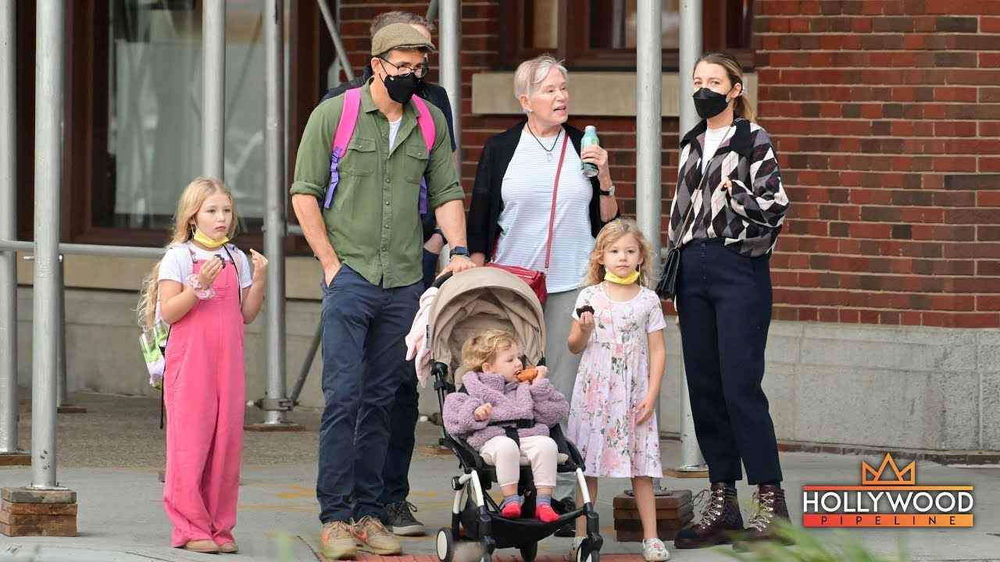
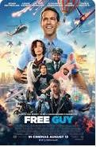
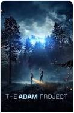
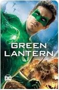
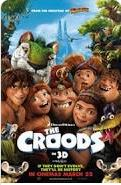
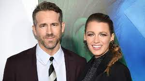

Ryan Rodney Reynolds is a Canadian-American actor and producer. Throughout his 30-year career in film and television, he has received multiple accolades, including a Critics' Choice Movie Award, three People's Choice Awards, a Grammy and Golden Globe nomination, and a star on the Hollywood Walk of Fame
|  |  |  |  |
|
James Chester Reynolds James Chester Reynolds, was a Royal Canadian Mounted Policeman before retiring from the force and going to work as a foods wholesaler |
Tammy Reynolds Tamara Lee, worked as a retail-store saleswoman.Ryan is the youngest of four sons. |

Blake Lively(m. 2012) Reynolds first met Blake Lively in early 2010 while filming Green Lantern, in which they co-starred.They began dating in October 2011 and married on September 9, 2012 |
©2020-2021.(URK20CS2075) - Web Technology Lab Batch 4. All Rights Reserved